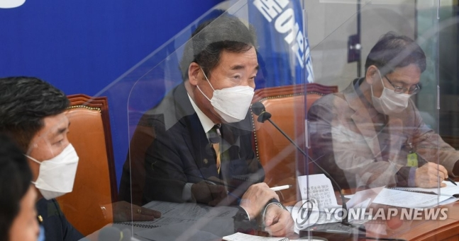

당헌당규 개정 전당원 투표키로…"국민께 거듭 사과"

도시철도 운영기관 노사대표 만난 이낙연
(서울=연합뉴스) 진성철 기자 = 더불어민주당 이낙연 대표가 28일 국회에서 열린 전국 도시철도
운영기관
노사대표자 간담회에서 인사말하고 있다.
(서울=연합뉴스) 이유미 기자 = 더불어민주당 이낙연 대표는 내년 4월 서울·부산시장 보궐선거와 관련해 "후보 공천을
통해 시민의 심판을 받는 것이 책임있는 도리라는 생각에 이르렀다"며 공천 방침을 밝혔다.
이 대표는 29일 의원총회에서
"오늘 오전 최고위원들의 동의를 얻어 후보 추천 길을 여는 당헌 개정 여부를 전당원 투표에 부쳐 결정하기로 했다"고 말했다.